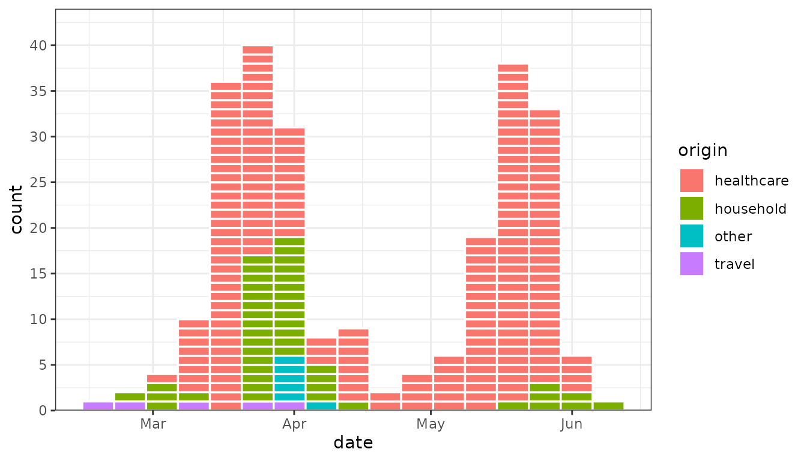

EpiCurves: epicurves in ggplot with ggsurveillance
Source:vignettes/Epicurves_with_ggsurveillance.Rmd
Epicurves_with_ggsurveillance.Rmd
library(ggplot2)
library(dplyr)
#>
#> Attaching package: 'dplyr'
#> The following objects are masked from 'package:stats':
#>
#> filter, lag
#> The following objects are masked from 'package:base':
#>
#> intersect, setdiff, setequal, union
library(tidyr)
library(outbreaks)
library(ggsurveillance)
#> Registered S3 method overwritten by 'tsibble':
#> method from
#> as_tibble.grouped_df dplyr
ggplot(outbreaks::ebola_kikwit_1995, aes(x = date, weight = onset)) +
geom_epicurve(date_resolution = "week") +
scale_x_date(date_breaks = "2 weeks", date_labels = "%V'%g", name = "week") +
scale_y_cases_5er() +
theme_bw()
outbreaks::sars_canada_2003 |>
pivot_longer(starts_with("cases"), names_prefix = "cases_", names_to = "origin") |>
ggplot(aes(x = date, weight = value, fill = origin)) +
geom_epicurve(date_resolution = "week") +
scale_y_cases_5er() +
theme_bw()
influenza_germany |>
filter(AgeGroup != "00+") |>
# Calc Influenza Seasons
align_dates_seasonal(dates_from = ReportingWeek) |>
ggplot(aes(x = ReportingWeek, weight = Cases, fill = season)) + # , weight = Cases
geom_epicurve(color = NA, stat = "count") +
scale_y_cases_5er() +
theme_bw()